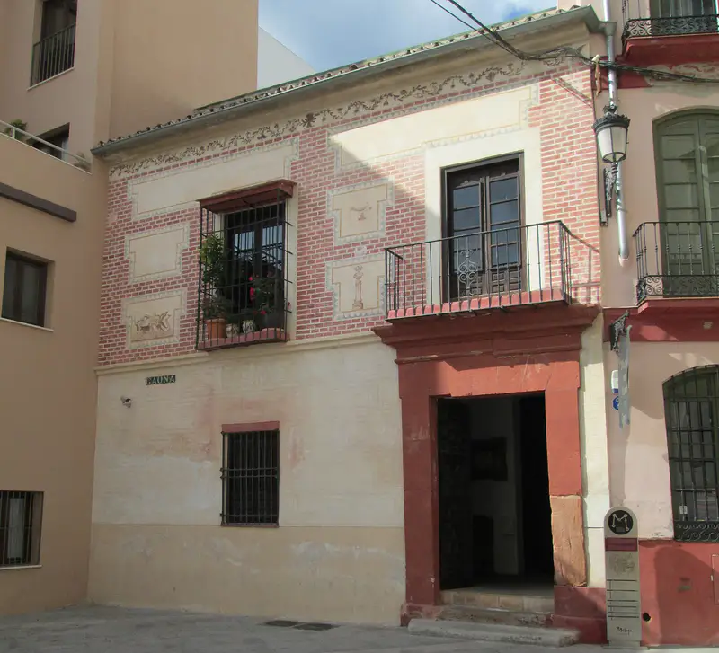
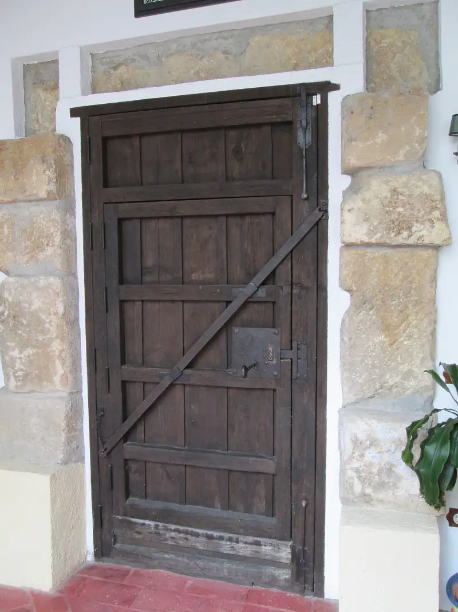
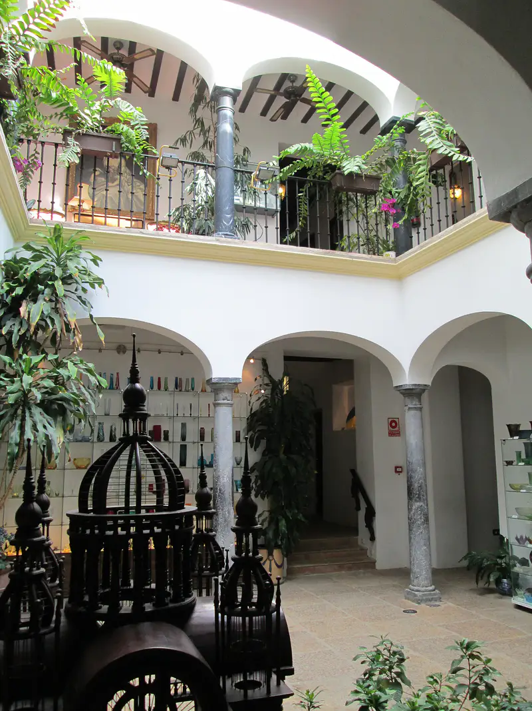
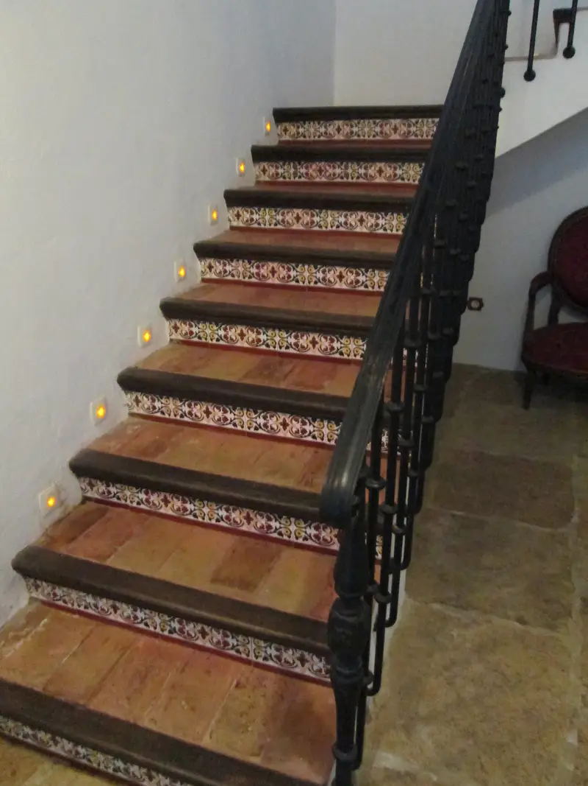
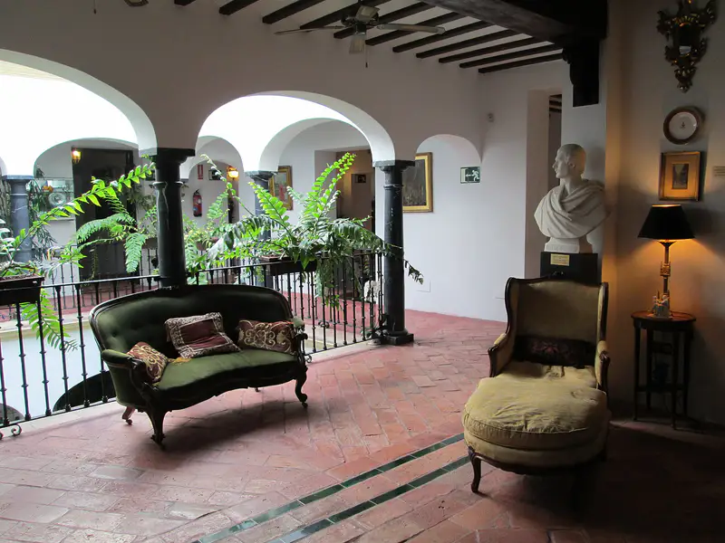
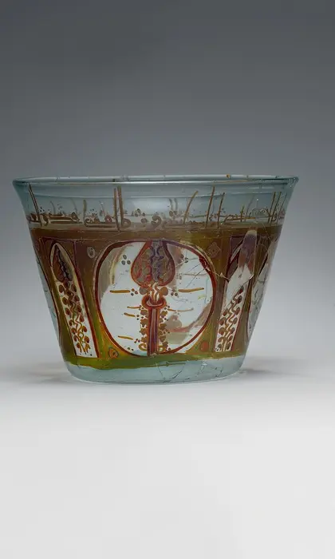
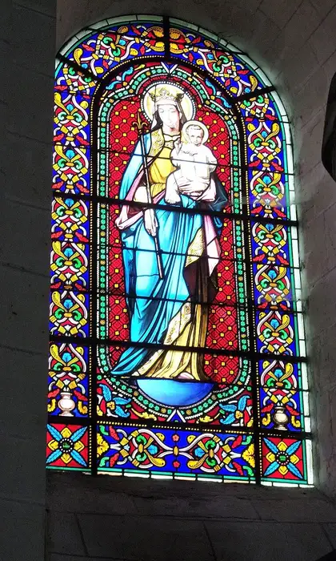
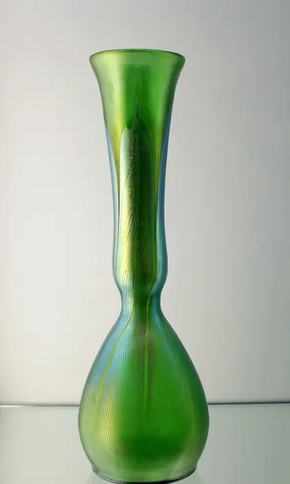

¿Studio Glass o Art Glass?
Studio GlassEl artista diseña y ejecuta.
Art GlassLa idea de un creativo, hecha por un artesano.
Museo privado · Casona del siglo XVIII
Unas 3.000 piezas de cristal de diversas épocas, con la pintura, el mobiliario y los objetos de cada periodo, en una casona cuidadosamente restaurada frente a la iglesia de San Felipe Neri. Todas las visitas son guiadas.
La casa
Cada pieza convive con la pintura, el mobiliario y los objetos de decoración de su propio periodo, recreando el contexto doméstico en que vivieron sus primeros propietarios. Un museo de artes decorativas, formado por una colección privada.
El museo quiere ser una entidad viva: un aliciente para rehabilitar San Felipe Neri, el antiguo barrio artesano, y un núcleo de referencia para los artesanos modernos que estudian técnicas del pasado, muchas perdidas u olvidadas.
Los visitantes agradecen al señor Gonzalo que les deje disfrutar de su casa.
Novedad: ya puedes visitar la ampliación del museo. El proyecto de jardín de cristal frente a San Felipe Neri, inspirado en Dale Chihuly, está [estado por confirmar].
Entra en la casa
Desliza para cruzar cada puerta. Fotos del propio museo publicadas en Wikimedia Commons en 2013.

Una casona del siglo XVIII, cuidadosamente restaurada, en la Plazuela Santísimo Cristo de la Sangre, frente a la iglesia de San Felipe Neri.

Se cruza el umbral y empieza la visita, siempre guiada, de una hora aproximadamente.

El corazón de la casa: arcos, columnas y plantas, con galerías alrededor.

Peldaños de barro y azulejo con barandilla de hierro. El museo también tiene rampa y ascensor.

Pintura, mobiliario y objetos de cada periodo recrean el ambiente doméstico de sus primeros propietarios. Los muebles se miran: no se usan.
Fotos: Tyk · Wikimedia Commons · CC BY-SA 3.0 (2013)
Paseo por las épocas
Desliza y la luz cambia de color con cada época. Cada parada es una pieza publicada por el propio museo.

Piezas persas de los siglos X y XI, expuestas en la colección: el capítulo más antiguo del recorrido.

Vidriera firmada por Ernest Haussaire, uno de los grandes vidrieros franceses del siglo XIX, procedente de la capilla del antiguo hospital de Wattrelos, cerca de Lille. Tres paneles de 130 cm, recién restaurada.

Un jarrón «sangre de toro» de Jean Beck, hallado en un anticuario de Berlín, acabó regalado; el director salió a buscar otro. El resultado: un modelo creado en Múnich en 1913, un año antes de la Primera Guerra Mundial.
Una escena firmada de pescadores del norte de España, de Luis Boada Rolín, de la Unión de Artistas Vidrieros de Irún, taller de más de 5.000 obras. Iluminó la escalera principal del propio taller hasta su cierre en 2008.
Una obra en vidrio diseñada por Salvador Dalí en 1978 para la casa alemana Rosenthal.
Una venus de cristal diseñada por el arquitecto Pedro Ramírez Vázquez y producida por Daum (1980); Claude Morin, iniciador del Studio Glass en Francia (1982); Licio Zanetti, de Murano, y Elaine Hyde (1987); Yoko Hirosawa (1989).
Dos obras firmadas por Ingrid Conrad-Lindig (1992 y 1995), que une pintura y escultura en vidrio, y una pieza firmada en 1997 por Dale Chihuly, formado en la fábrica Venini de Venecia y cofundador de la escuela de Pilchuck.
Doctor en arqueología, Saeed Golkar lleva la sabiduría antigua del vidrio persa al Studio Glass moderno. El paseo termina donde empezó.
Fuente: página «Piezas» de museovidrioycristalmalaga.com.
La luz, hora a hora
De la apertura al cierre: mira cómo cae el color sobre el suelo, como en la casa.
Ernest Haussaire · tres paneles de 130 cm · capilla del antiguo hospital de Wattrelos.
Interpretación abstracta dibujada por código, no es una reproducción de la obra. La vidriera real se ve en la visita guiada.Sabías que…
El Studio Glass eclosionó en los años 60 en un garaje del Museo de Toledo, Ohio, cuando unos visionarios decidieron que el artista también realizaría la obra.
Dale Chihuly dice que su inspiración nació de las flores que cultivaba su madre en Tacoma. Su jardín de cristal de Seattle inspiró el proyecto de jardín del museo.
El mobiliario es parte de la colección: no se puede usar. ¿Cansado? Hay sala de espera. Se permiten fotos, sin flash.
Prepara la visita
No hace falta reservar, salvo grupos de más de 10 personas. Visitas en español, inglés, francés e italiano.
Cerrado todos los lunes, 25 de diciembre, 1 y 6 de enero y el mes de agosto.
La visita guiada está incluida. Tarifas publicadas en la web actual del museo [por confirmar].
Incluye visita y materiales · en castellano · máx. 2 h 30 · grupos de mínimo 10 · reserva por teléfono.
«¿Te gustaría cenar en una mesa como esta?» El museo organiza eventos: pregunta por teléfono o email. Formato y precios [por confirmar].
El museo tiene una visita virtual 360°; aquí quedaría integrada en la página en vez de en una web aparte [por integrar].
Reservar
Elige día, hora e idioma. Preparamos un email para el museo; no se envía nada hasta que pulses enviar en tu correo.
Cómo llegar
En el antiguo barrio artesano de San Felipe Neri, frente a la puerta principal de la iglesia.
Concepto de Noir Digital · no es la web oficial